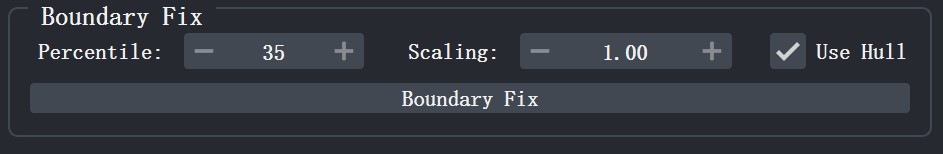
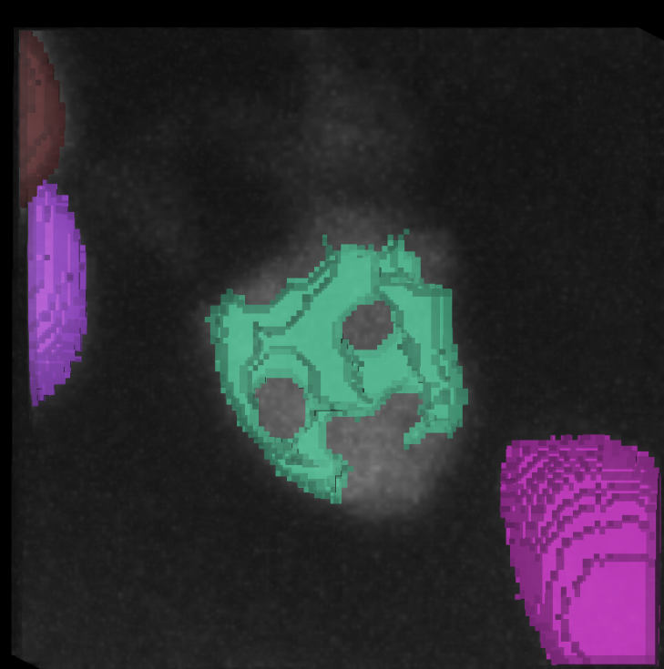
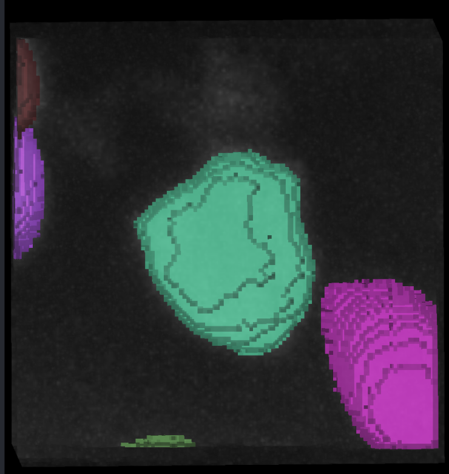

Cell Nucleus Boundary Refinement¶
Boundary refinement is used to correct deviations between pre-segmented labels and the true cell nucleus contours, such as boundary over-expansion intruding into the background, or boundary shrinkage causing missing cell regions. NuPatch3D re-estimates the cell boundary based on local image intensity information, and generates smooth, connected cell masks through morphological post-processing. The relevant functions are located in the Boundary Fix region of the Cell Boundary Refine plugin panel.

After refinement is completed, you must click the Commit button in the Interaction region, or press the shortcut Shift+S, to write the modified results back to the global Labels layer. Otherwise, the repaired labels will only be saved in the current local editing region and will not be synchronized to the global label layer. For detailed instructions on committing and saving results, please refer to Saving Results.
6.1 Set Parameters¶
Percentile¶
Percentile controls the intensity threshold during boundary refinement (default: 35).
- Higher values retain fewer bright regions, causing the boundary to tend toward shrinkage;
- Lower values retain larger regions, causing the boundary to tend toward expansion.
In general:
- If the label intrudes into the background region, appropriately increase this value;
- If the label misses the true cell edge, appropriately decrease this value.
Scaling¶
Scaling is the scaling coefficient for the boundary search range (default: 1.00).
- Greater than 1.0: Expands the search range;
- Less than 1.0: Shrinks the search range.
Use Hull¶
Use Hull controls whether to enable the 3D convex hull constraint (enabled by default).
- Checked: Searches for the boundary only near the convex hull of the original label;
- Unchecked: Searches for the boundary within the cell's Bounding Box.
For regularly shaped cells, it is recommended to keep this enabled; if the cell shape is complex or the convex hull constraint performs poorly, try disabling it.
6.2 Execute Refinement¶
Confirm that the label ID to be refined has been entered in Label ID (multiple labels are not supported).
Adjust as needed: Percentile; Scaling; Use Hull. Then click Boundary Fix.
NuPatch3D will recalculate the target cell boundary based on the local original image, and automatically update the label results in the LabelFix layer. The refinement process only affects the target label and its surrounding background region, and will not overwrite neighboring cells.
After refinement is completed, it is recommended to check the boundary fit with the fluorescence signal in the 2D or 3D view. If the result is not ideal, adjust the parameters and execute Boundary Fix again.
Boundary refinement is usually used in conjunction with napari's brush, eraser, and other tools to achieve more precise results. See Basic napari Operations for details.

